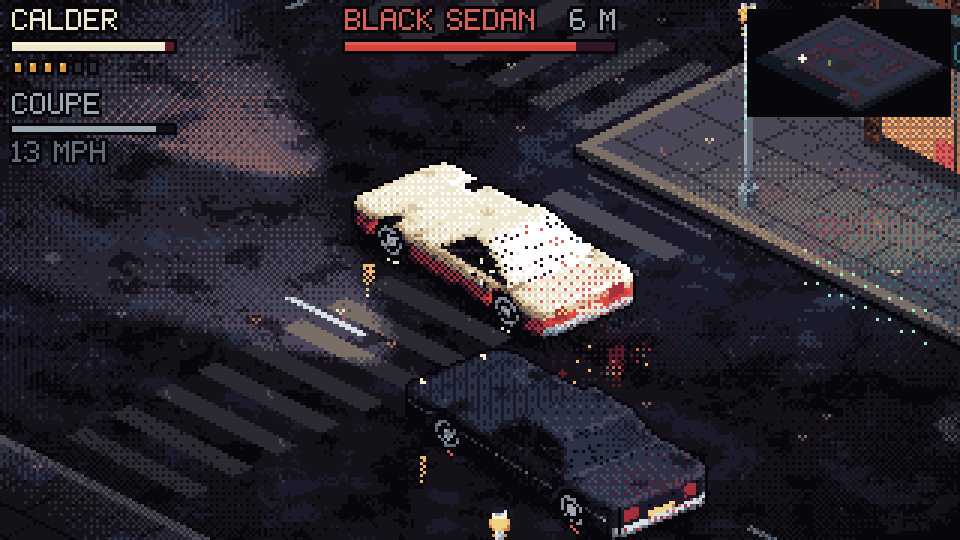

The Black Sedan
Real-time chase and gunfight
A drive-by outside the Blue Comet. Take any car on the street, chase the sedan across the city, and finish it at Pier 9.
WASD drive or walk · mouse aim · click shoot · E get in or out · Space handbrake
Play